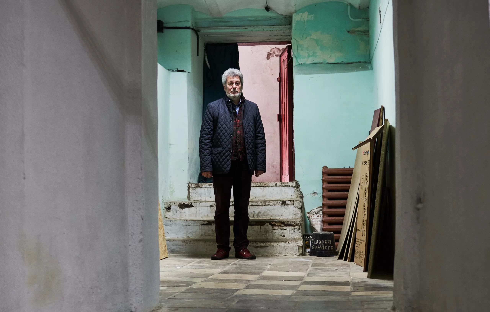
Museum of preserved secrets
25.04.23
Chernihiv suffered a lot from the Russian-Ukrainian war. From the very first day, the city was attacked, then almost surrounded, and bombarded with aviation and artillery, but it withstood the attack. Not every city can boast of such a rich historical museum, like Chernihiv. Fortunately, the collection of unique exponents and the main building of the museum remained whole, but one of the branches was severely damaged.
We talked to Serhii Layevsky, the director of the museum; he not only stayed in the city but even lived in the museum until the Russians were forced to leave. My first question was what exponents of the museum were the most valuable, but it took Mr. Serhii half an hour to answer it.
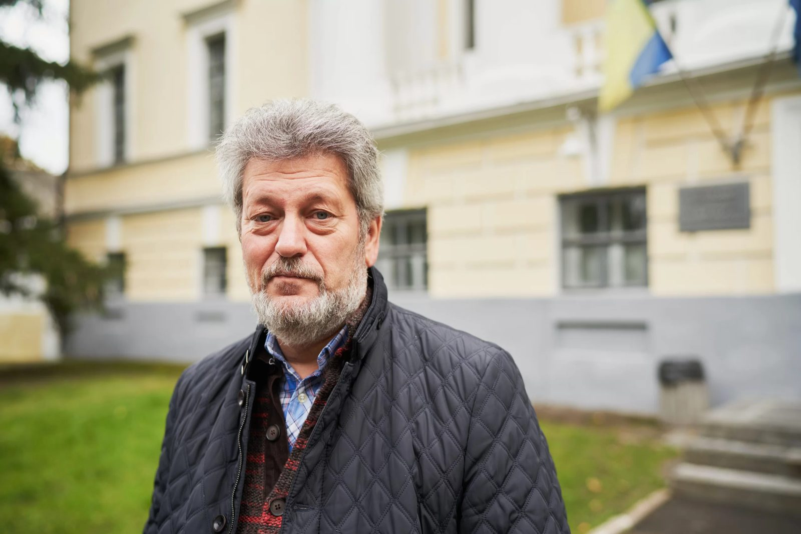
At the end of the 19th – at the beginning of the 20th century, there was an explosion of new museums in Chernihiv. In 1896, the Historical Museum of the Chernihiv Gubernial Scientific Archive Commission was founded, in 1902 – the Museum of Ukrainian Antiquities of Vasyl Tarnovsky, in 1906 – the Eparchial Ancient Fund, and in 1919 – the Museum of Aristocratic Daily Life and the Ethnography Museum. Each one of them had its own specifics but in 1923 the Soviet authorities merged them into one Chernihiv State Historical Museum. After Ukraine gained independence, it was named after Vasyl Tarnovsky, and there were reasons for this.
The collector Tarnovsky (1838-1899) had money and a good feeling about what objects had a big historical value, and he also didn’t forget about science. For instance, to gather archaeological exponents, Tarnovsky bought land on the Prince’s Hill in the Cherkasy region, and hired archaeologists, who did excavations there for a couple of years and not just gave him what they found, but catalogized and described them scientifically. Besides that, he gathered a vast collection of artifacts of the Cossack epoch: personal belongings of Ivan Mazepa (Ukrainian hetman of the end of 17th – the beginning of 18th century, who allied with the Swedes to try to regain independence from Moscow for Ukraine), Danylo Apostol, Pavlo Polubotko (Ukrainian hetmans – heads of autonomous Ukrainian state in different times), Vasyl Kochubei (Ukrainian public and political figure of 17th – beginning of 18th century), archives of Cossack nobles, more than 150 universals (legal acts issued by Ukrainian hetmans) of hetmans from Leftbank Ukraine from the 18th century, more than a thousand prints of private stamps on documents (from hetmans to regular citizens and Cossacks), pernaches, and maces. The collection of Tarnovsky also included over a thousand exponents connected to Taras Shevchenko (artistic works, the diary, personal belongings) and also manuscripts of Kostomarov and Kulish, a translation of the Bible by Pylyp Morachevsky (the first translation of the New Testament in modern Ukrainian), Nechui-Levytsky and Kulish, and numerous other things.
Ukrainian artist of Cossack origin who worked in the Russian Empire and was later appropriated by Russia, so is mostly known as a Russian artist Illia Repin used the collection of Tarnovsky for his famous painting “Reply of Zaporizzhian Cossacks”. He worked on it in Kachanivka, which belonged to Tarnovsky, and used some artifacts from the collection of the host to reflect the spirit of the epoch.
Tarnovsky gave all his cultural treasures to Chernihiv with the condition that they have to stay in the city. He wanted to place the collection in the House of Lyzohub (building of the Chernihiv Regiment Chancellery that was built in the 1690s on the territory of the Chernihiv Citadel. At first, it was the property of Chernihiv Colonel Yakiv Lysohub. In Cossack times, Regiments were administrative units of the then autonomous Ukrainian state) but the city gave a building in the then outskirts of the city for it.
After merging the five museums, Soviet authorities infringed on the testament of Tarnovsky: the Shevchenko collection went to the newly created Museum of Shevchenko in Kyiv, Skovoroda’s clock – to Skovorodynivka.
But Chernihiv Historical Museum isn’t just the collection of Tarnovsky. Four other museums also collected interesting exponents. For instance, the Eparchial Ancient Fund had over 50 old prints of Evangelies in silver covers.
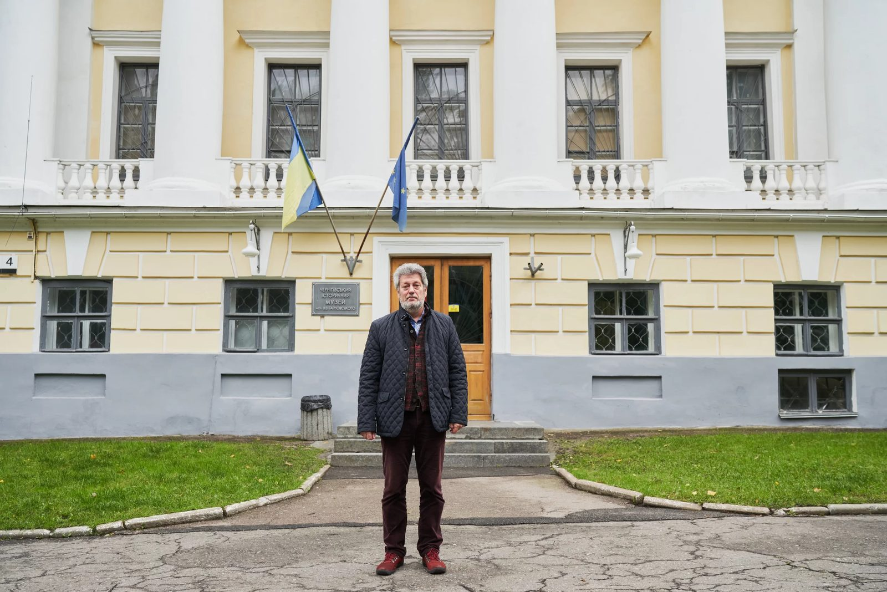
The museum was enriched with new findings as well. In 1925, an archaeologist Petro Smolichev discovered the biggest Viking encampment on the Ukrainian territory in the village of Shestovytsia; the findings from these excavations, and also from the archaeological excavations in Chernihiv itself and in the region broadened the institution’s funds.
In Soviet times, the metal cover of the Troitsko-Illinska icon was transferred to the museum, adorned with silver plates (total weight of 32 kilograms). It was made for the order by Mazepa.
Here, the only beehive from the apiary of Petro Prokopovych is kept (he was the inventor of a hive with frames). And the only tractor from the first Soviet tractor plant in Tokmak is also kept here.
Mr. Serhiy remarks that the museum is often visited by researchers. Some want to take a look at the bell of Polubotko, some – at Mazepa’s mug, some – at the belt of Skoropadsky (also a Hetman from the Cossack times), some – at the kontush of the daughter of Danylo Apostol, and some want to dive into the collection of 300 old prints.
During WWII, it was planned to evacuate the museum to Ufa, in Russia. They didn’t manage to take everything, and because of confusion part of the collection went to Orenburg, Russia. Things that were left in Chernihiv were destroyed, as the Nazis dropped a couple of aerial bombs on the museum. All three stories of the museum collapsed and burned. Ukrainian Soviet writer and film director Oleksandr Dovzhenko mentions in his diary that he saw the museum in flames, and how “Bohdan and Ivan [he meant Bohdan Khmelnytsky and Ivan Mazepa. Khmelnytsky helmed the revolt against Poland that ended in the creation of an autonomous Ukrainian state and became the first Hetman, but he had to make a pact with Moscow to succeed. Mazepa, on the contrary, tried to gain independence from Moscow] burn looking at each other”. These were the portraits of Khmelnytsky and Mazepa from the collection of Tarnovsky.
In Orenburg, they stole the bell of Mazepa from the museum’s funds (that had been saved from Baturyn, at that time the hetman’s capital, which was destroyed by Russians); Stalin had just legalized Orthodox Christianity, and the local church lacked bells. When the museum came back, some of the exponents remained in Kyiv. All in all, during WWII around half of the funds were lost, including a rich collection of artifacts connected to craftsmen guilds (archives of guild masters from different towns, guild flags, etc.), a map collection of Tarnovsky, and from all the paintings only five survived.
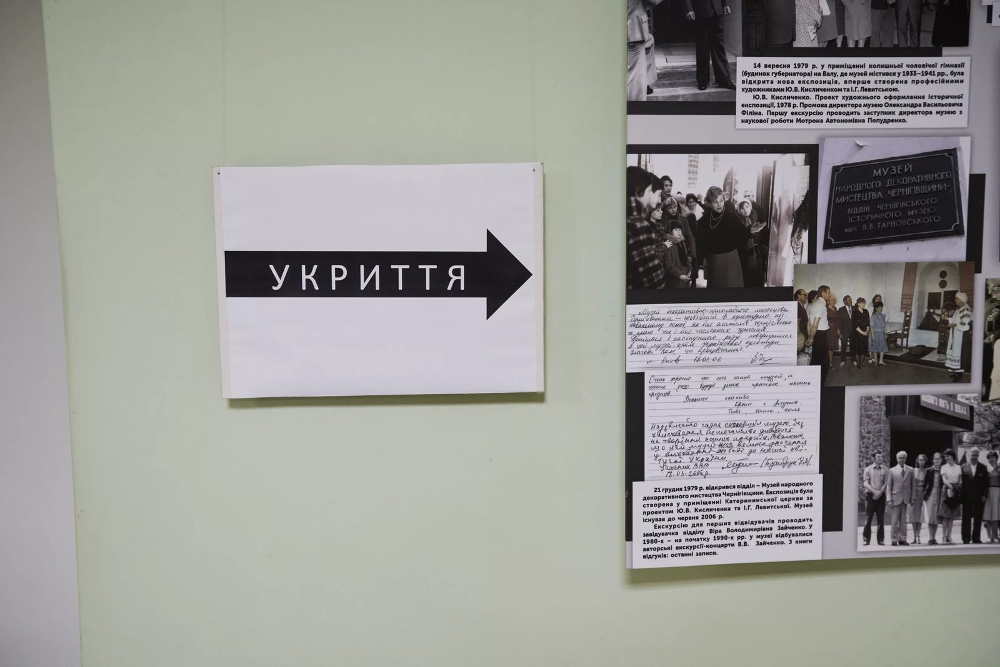
Since 2014, when the war came to Ukraine again and the Russians destroyed the Donetsk Museum of Local History, the management of the museum tried a couple of times to work out a clear strategy for evacuation with the Ministry of Culture, but it all ended with empty talks. In the 1960s, an evacuation plan was developed in case of an emergency, to move the museum… to the north of the region, closer to the Russian border, on a special base. This plan was never renewed. In January 2022, when a large concentration of Russian forces was close to the Chernihiv region, Mr. Serhii understood that the museum has to count on its own forces only.
The employees of the museum bought packaging materials, divided the funds into two groups by value to know which exponents to evacuate first, and developed an algorithm to pack everything as quickly as possible.
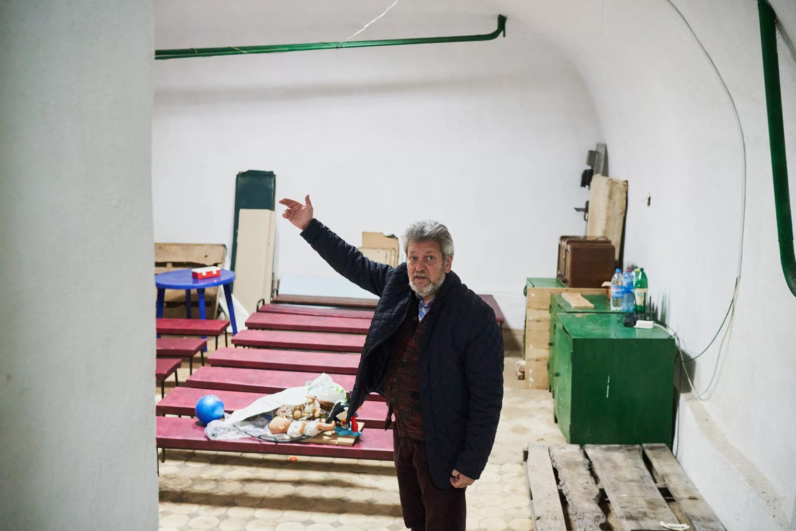
These plans had to be enacted soon, on February, 24, when Chernihiv was being shelled. Mr. Serhii and a couple of other employees moved to the basement of the museum, which had survived WWII. The walls there are three meters thick, but even they shook from explosions of aerial bombs. In this basement, other citizens of Chernihiv were also given shelter. During the whole siege, 25-30 people always stayed there for a night. There were also two pregnant women; one of them almost gave birth in the basement but was successfully taken to the hospital two hours before childbirth.
In this district of Chernihiv, the heating disappeared on February 27th, electricity was also often absent, but natural gas was stably available. The employees of the museum started to pack the more valuable part of the exponents on the very first day and then proceeded with dismantling all the three stories of the permanent exhibition (over 5000 exponents). They hastened their work when on March, 6 a 120-mm mine exploded not far from the museum.
Two more employees were busy with dismantling besides Mr. Serhii. They hid the exponents on turns so that in case of an occupation nobody would know the locations. For the inhabitants of the basement, the employees of the museum read lectures, so the institution didn’t stop their educational work during the siege.
The Chernihiv region was freed from occupants on April, 4; in the middle of the month, the rest of the employees started to come to work to finish the dismantling and put the funds to order.
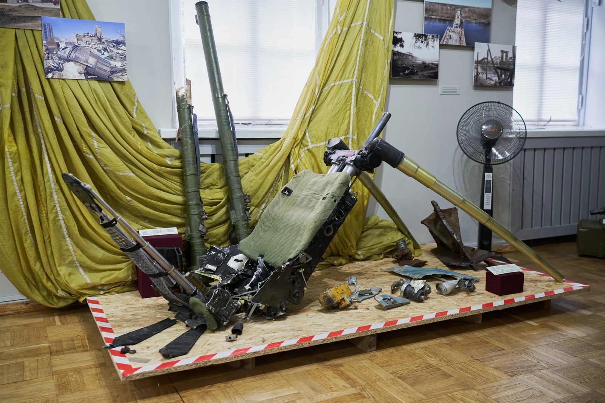
Denys Drozd, an employee of the museum, signed a contract with the military a week before February, 24, and defended the city at a rather difficult spot, but didn’t forget about the museum; in the middle of March, he handed over his first trophies. Other employees also started to collect exponents of the war. In September, when the article was written, there were over 200 of them already.
The war goes on, and the Ministry doesn't allow to exhibit valuable exponents, so at the end of July, the museum opened an exhibition “ruscism=fascism” made of freshly collected exponents about the Russian-Ukrainian war. A couple of months ago, these objects posed a real threat, bringing death, and now they turned into artifacts: mine shards, an “Uragan” rocket, a grenade launcher, a Russian uniform, Georgian ribbons, dry rations, a parachute and a chair of a fighter aircraft pilot, agitational shells and cards.
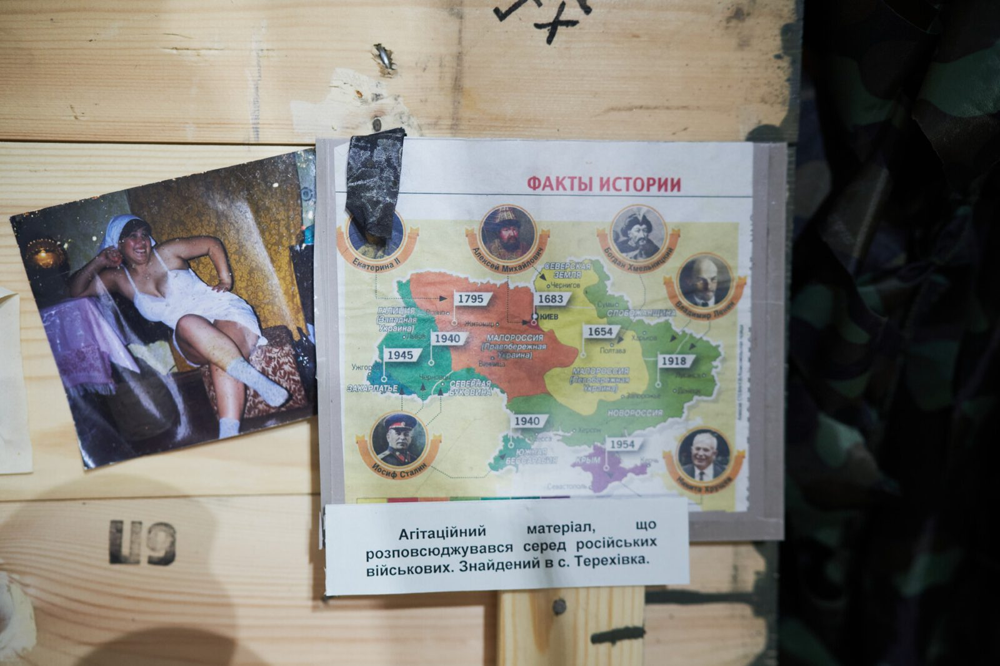
But a tablet with mine shards attached is the most impressive. They are identical but divided by a line. Half of them are Nazi mine shards from WWII that were found in the walls of the museum during the repair, the other half are Russian mine shards from mines that were dropped here in March.
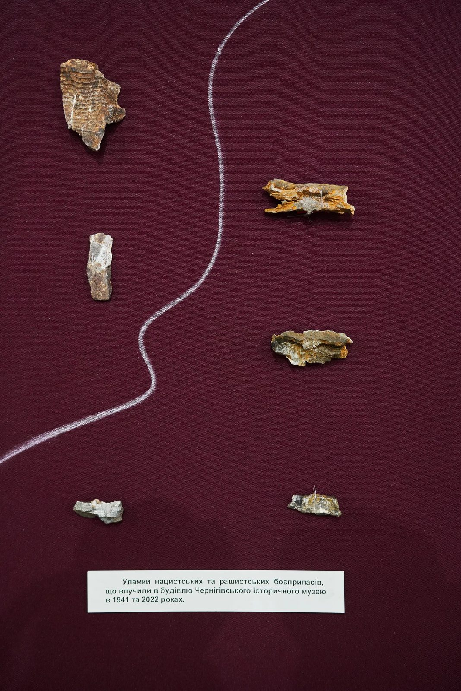
As Mr. Serhii says, both during WWII and now, almost the same targets were damaged, and the methods of warfare of both occupants are very similar.
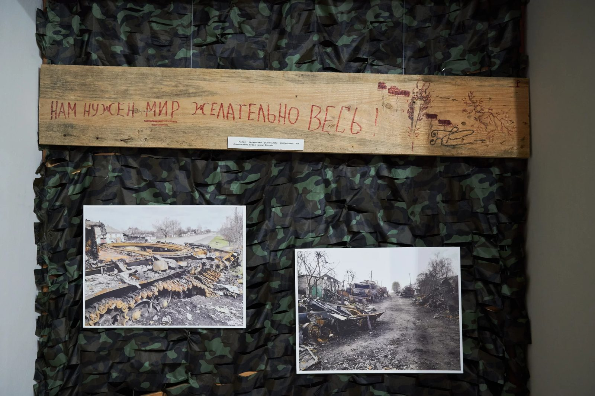
The Museum of Tarnovsky has three branches. The farthest one – and the closest to Russia (five kilometers to the border) – was spared by the war; it’s the Lisohrad Memorial Complex of Partisan Glory. The second branch, the Lysohub Estate in Sedniv, was occupied on the very first day but no exponents are kept there and it remained intact. But the third branch, the Museum of Military History, situated in Chernihiv itself next to a military object, suffered the most. All the big windows were pushed out by the blast wave, and display cases were ruined, but even here, the exponents have fortunately survived.
The most damage was done to the historical building where the Museum of Antiquities of Tarnovsky was situated at first. It’s next to the stadium which the Russians decided to completely cover with aerial bombs.
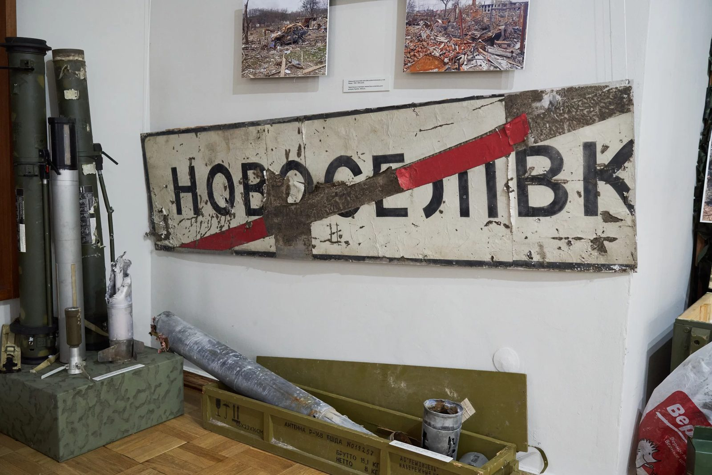
After dismantling the permanent exhibition, Mr. Serhii decided to change it significantly. In Soviet times, the exhibition was formed chronologically, starting from Paleolitics in the first hall and ending with modern times. All the collections were mixed up to keep to this principle. Now, Mr. Serhii plans to base the exhibition on the principle of separate collections: the collection of Tarnovsky, the collection of the Eparchial Ancient Fund, the collection of excavations from Shestovytsia, and so on. To show off all its riches, the museum needs three times more area than it currently has.
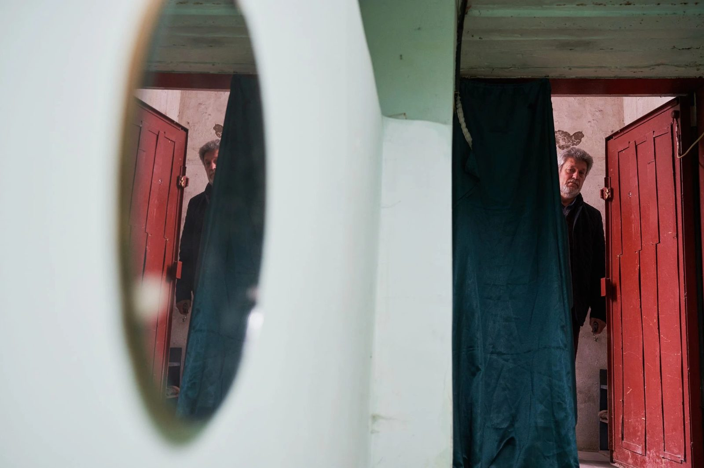
The history and treasures of the Tarnovsky Chernihiv Historical Museum and how it survived the siege of the city can be summarised with a quote by Mykhailo Hrushevsky, a prominent Ukrainian historian and political figure from a century ago: “In Chernihiv, the secrets of ancient Ukraine are hidden – and the germs of the new one”.
A series of reports was carried out with the support of the Documenting Ukraine project from the Institut für die Wissenschaften vom Menschen.